Recap · the door · the place to go instead. Second pass.
The recap is one climb, forward only, from the pavement at your feet to the antenna it
built. The door is act 1’s mechanism run backwards. And the advice is given on a phone,
lifted above the street so the wall closing below it is visible at the same time — two refusals,
one event. The notice then leaves the glass and is carried to the counter that can answer it.
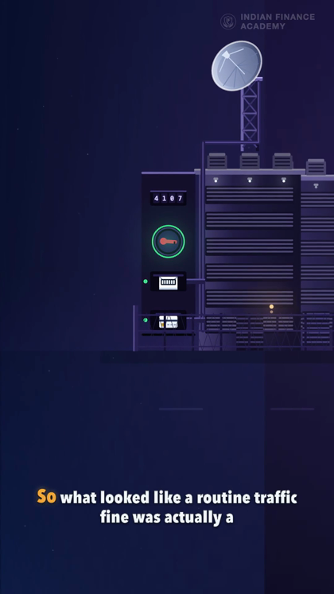
100.10sB(164) “So” THE HANDOVER — act 3’s last frame, unchanged. No beam is fired back at the city101.20s the return follows the tunnel that is already there, at one even speed
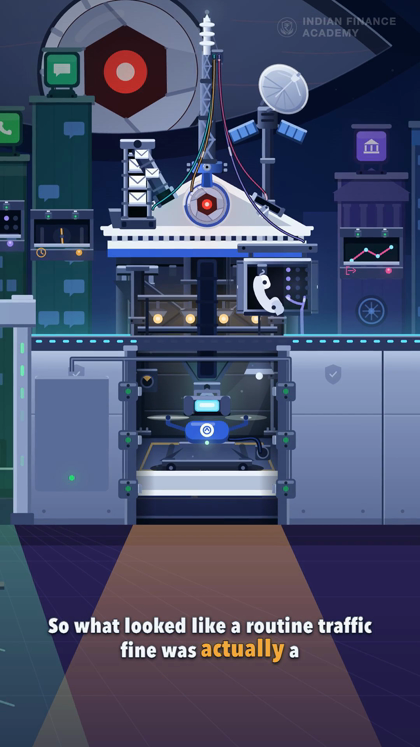
103.40sB(170) “actually” and arrives on the street it started on — the wall, the hole, the pavement
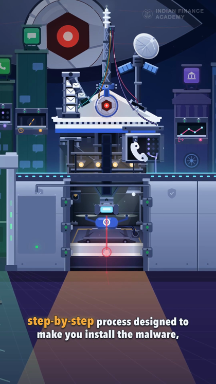
104.40sB(171) “a step-by-step” IT SETS OFF AT YOUR FEET. The pavement answers, flat, the way ground does
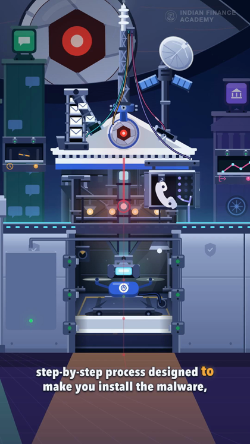
106.00sB(174) “to make” one climb, accelerating — through the hole, into the building, up the shaft
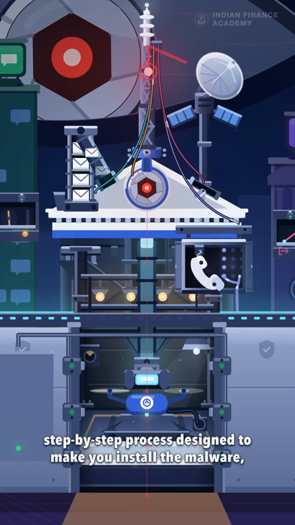
107.90sB(176) “install the” and it lands in the antenna it built. The camera rose with it
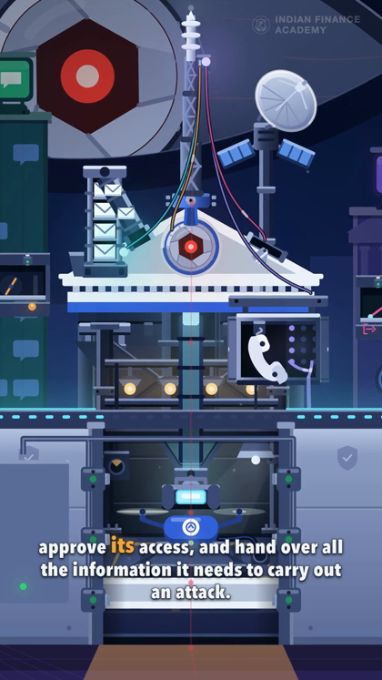
108.80sB(178) “approve its” the four cables the grants left, in the order they were granted
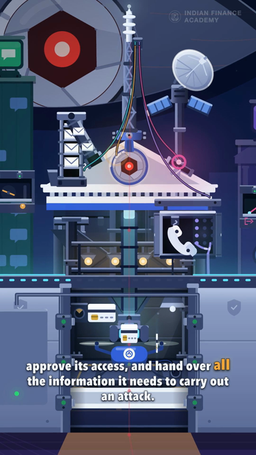
110.80sB(181) “hand over” three cards out of the bay, the message back down the SMS feeder
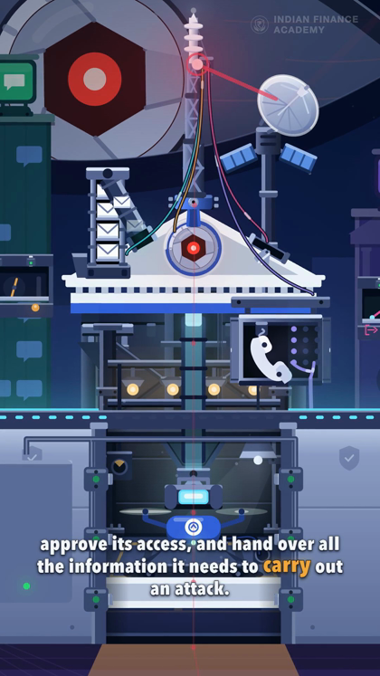
112.90sB(186) “carry” the head fires the dish, and it is away
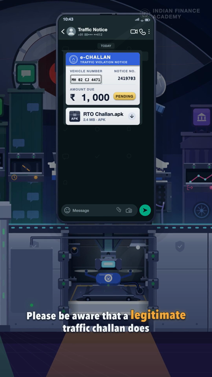
115.70sB(192) “a legitimate” THE PHONE COMES BACK UP — and sits above the street, so both are visible
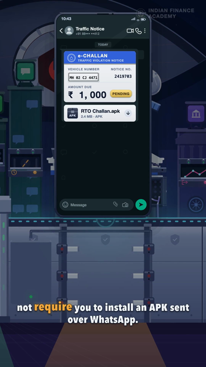
118.00sB(194)+0.40 below it the leaf has risen, the bolts are home and the field has closed
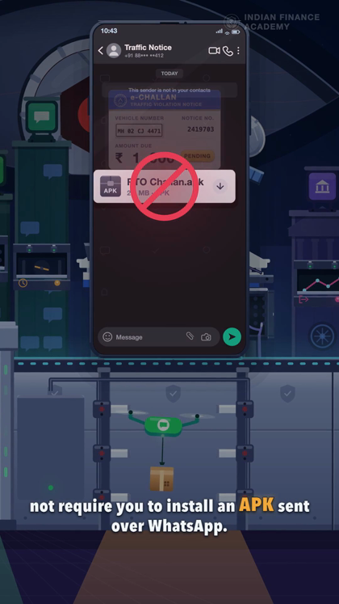
119.60sB(198) “install an” TWO REFUSALS, ONE EVENT: the attachment declines, and so does the wall
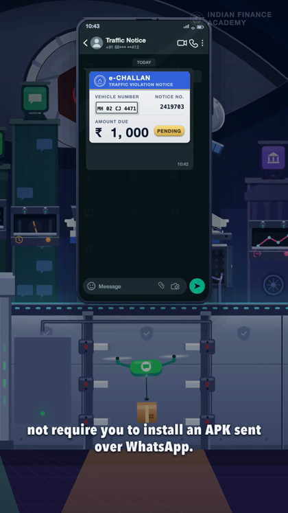
121.10sB(201) “WhatsApp.” the courier takes the parcel away again
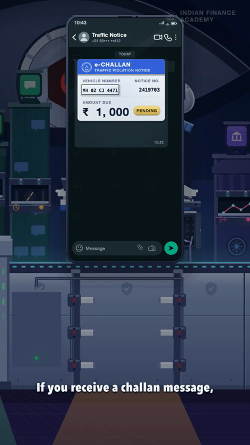
122.40sB(202)+0.10 “If” the notice lights: this is the thing you received
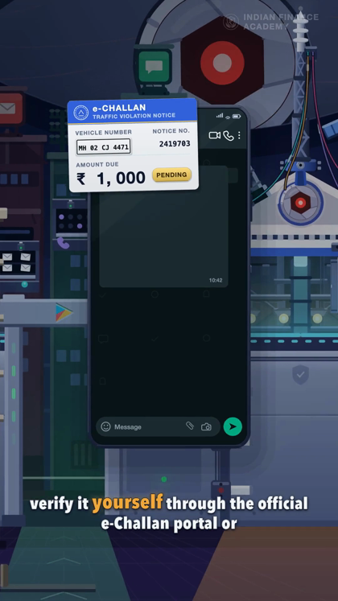
124.70sB(206) “verify” IT LEAVES THE GLASS. You take it yourself, and the phone goes down
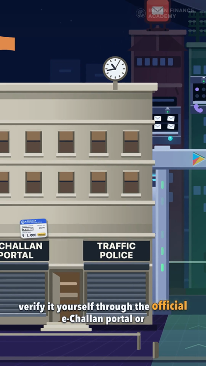
125.80sB(208) “through” out over the plaza, past the store gate that was always the right door
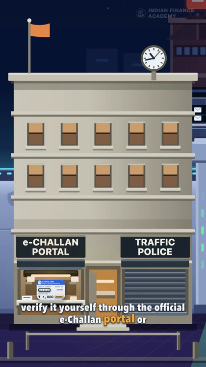
127.30sB(210) “e-Challan” handed in at the counter of the office that can answer it
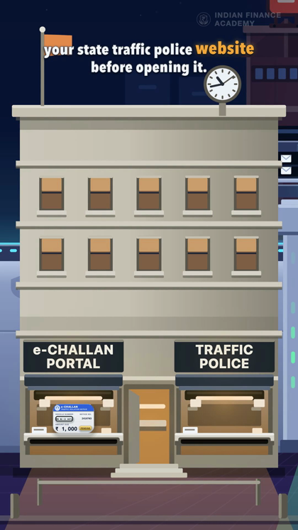
129.60sB(216)−0.52 HELD, AND LOCKED OFF — one framing for eight seconds: both counters the sentence names, the same size, the same distance from the middle, the whole facade in shot
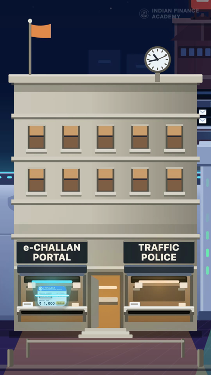
131.80sB(216)+0.43 “before opening” THE NARRATION IS OVER. The lens over the sill goes to the portal’s colour and its light crosses the paper — the last 2.9 s of the film are silent picture
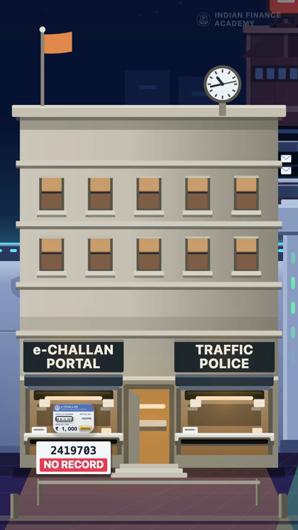
133.00s and the PORTAL answers, printing as it feeds out of the slot: 2419703 — NO RECORD, and the official blue goes out of the notice